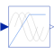

VfControllerVoltage-Frequency-Controller |

|
Information
This information is part of the Modelica Standard Library maintained by the Modelica Association.
Simple Voltage-Frequency-Controller.Amplitude of voltage is linear dependent (VNominal/fNominal) on frequency (input signal "u"), but limited by VNominal (nominal RMS voltage per phase).
m sine-waves with amplitudes as described above are provided as output signal "y".
By setting parameter EconomyMode=true, Voltage rises quadratically with frequency which means flux,torque and loss reduction for fan and pump drives.
The sine-waves are intended to feed a m-phase SignalVoltage.
Phase shifts between sine-waves may be chosen by the user; default values are (k-1)/m*pi for k in 1:m.
Parameters (6)
| nout |
Value: m Type: Integer Description: Number of outputs |
|---|---|
| orientation |
Value: -Modelica.Electrical.MultiPhase.Functions.symmetricOrientation(m) Type: Angle[m] (rad) Description: Orientation of phases |
| VNominal |
Value: Type: Voltage (V) Description: Nominal RMS voltage per phase |
| fNominal |
Value: Type: Frequency (Hz) Description: Nominal frequency |
| BasePhase |
Value: 0 Type: Angle (rad) Description: Common phase shift |
| EconomyMode |
Value: false Type: Boolean Description: Economy mode: voltage quadratic dependent on frquency |
Outputs (2)
Connectors (2)
| u |
Type: RealInput Description: Connector of Real input signal |
|
|---|---|---|
| y |
Type: RealOutput[nout] Description: Connector of Real output signals |
Used in Examples (12)
|
Modelica.Electrical.Machines.Examples.AsynchronousInductionMachines
Test example: AsynchronousInductionMachineSquirrelCage with inverter |
|
|
Modelica.Electrical.Machines.Examples.AsynchronousInductionMachines
Test example: AsynchronousInductionMachineSquirrelCage with inverter driving a conveyor |
|
|
Modelica.Electrical.Machines.Examples.AsynchronousInductionMachines
Test example: AsynchronousInductionMachineSquirrelCage inverter drive |
|
|
Modelica.Electrical.Machines.Examples.SynchronousInductionMachines
Test example: SynchronousInductionMachineReluctanceRotor with inverter |
|
|
Modelica.Electrical.Machines.Examples.SynchronousInductionMachines
Test example: PermanentMagnetSynchronousInductionMachine with inverter |
|
|
Modelica.Magnetic.FundamentalWave.Examples.BasicMachines
Asynchronous induction machine with squirrel cage and inverter |
|
|
Modelica.Magnetic.FundamentalWave.Examples.BasicMachines
Asynchronous induction machine with squirrel cage and inverter driving a conveyor |
|
|
Modelica.Magnetic.FundamentalWave.Examples.BasicMachines
Starting of permanent magnet synchronous machine with inverter |
|
|
Modelica.Magnetic.FundamentalWave.Examples.BasicMachines
Starting of multi phase permanent magnet synchronous machine with inverter |
|
|
Modelica.Magnetic.FundamentalWave.Examples.BasicMachines
Starting of synchronous reluctance machine with inverter |
|
|
Modelica.Magnetic.FundamentalWave.Examples.BasicMachines
Starting of multi phase synchronous reluctance machine with inverter |
|
|
Modelica.Magnetic.QuasiStatic.FundamentalWave.Examples.BasicMachines.InductionMachines
Induction machine with squirrel cage and inverter driving a conveyor |